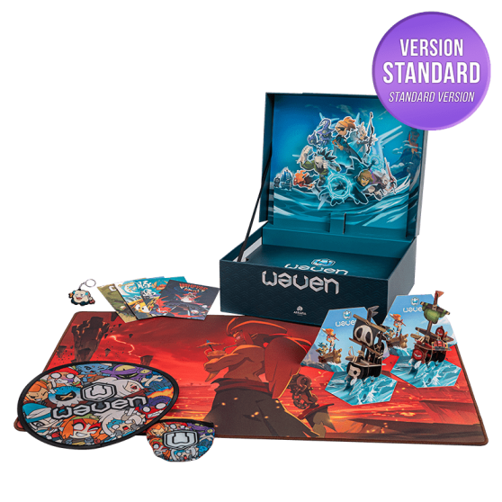

Les serveurs et les infrastructures numériques d’Ankama consomment de l’électricité pour faire fonctionner les jeux en ligne. Cette consommation participe à l’empreinte écologique de l’entreprise.
Les activités numériques d’Ankama produisent des émissions de CO₂ liées aux serveurs et aux équipements informatiques. Les déplacements professionnels peuvent également augmenter ces émissions.
Les mangas, figurines et cartes nécessitent du papier, du plastique et d’autres matières premières. Leur fabrication et leur transport ont donc un impact sur l’environnement.

Les salariés peuvent utiliser différents moyens de transport pour se rendre au travail ou en déplacement professionnel. Le transport des produits vers les clients génère également des émissions de CO₂.
Ankama peut limiter son impact écologique en réduisant les impressions et les emballages. L’utilisation d’équipements moins énergivores et une meilleure gestion des ressources peuvent aussi aider.